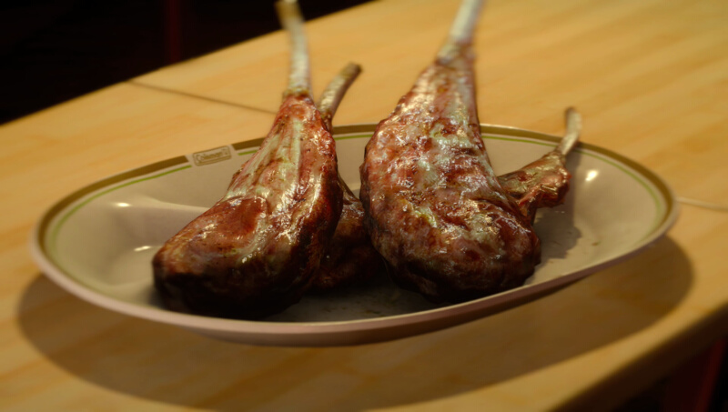

Spicy Long-Bone Rib Steak

Look at Ignis go! No wonder this recipeh is a favourite of Prompto's!
Nothing beats simple well cooked meat.
Ingredients
- Dualhorn Steak
- Leiden Pepper
Steps
- Get a Dualhorn Steak to drop from a Dualhorn to unlock
this recipe.
- Go to the Mini-Mart at Hammerhead, the JM Markets at the
Prairie Outpost and Old Lestallum or the kiosk at the Wiz
Chocobo Post to buy Leiden Pepper for 20 gil. Alternatively find
them at ingredient spots in Leide.
- Let Ignis go wild with his new RECIPEH